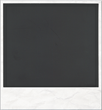

<!DOCTYPE html>
<html>
  <head>
    <meta name="viewport" content="initial-scale=1.0, user-scalable=no">
	<link rel="stylesheet" type="text/css" href="styles.css">
	<link rel="stylesheet" type="text/css" href="http://fonts.googleapis.com/css?family=Rancho&effect=shadow-multiple">
    <meta charset="utf-8">

	
	
    <title>Mark It! - Tell your stories</title>
	<script src="http://ajax.googleapis.com/ajax/libs/jquery/2.1.3/jquery.min.js"></script>
    <script src="https://maps.googleapis.com/maps/api/js?v=3.exp&signed_in=true&libraries=places"></script>
	<!-- Add mousewheel plugin (this is optional) -->
	<script type="text/javascript" src="fancybox/lib/jquery.mousewheel-3.0.6.pack.js"></script>

	<!-- Add fancyBox -->
	<link rel="stylesheet" href="fancybox/source/jquery.fancybox.css" type="text/css" media="screen" />
	<script type="text/javascript" src="fancybox/source/jquery.fancybox.pack.js"></script>
	<!-- Optionally add helpers - button, thumbnail and/or media -->
	<link rel="stylesheet" href="fancybox/source/helpers/jquery.fancybox-buttons.css" type="text/css" media="screen" />
	<script type="text/javascript" src="fancybox/source/helpers/jquery.fancybox-buttons.js"></script>
	<script type="text/javascript" src="fancybox/source/helpers/jquery.fancybox-media.js"></script>
    
	<script type="text/javascript" src="slider-master/js/jssor.js"></script>
    <script type="text/javascript" src="slider-master/js/jssor.slider.js"></script>
	<script type="text/javascript" src="toggles.js"></script>
	<script type="text/javascript" src="js-marker-clusterer/src/markerclusterer.js"></script>
	
	
    <script>
	
	
	
	
       

	
	
	
// This example adds a search box to a map, using the Google Place Autocomplete
// feature. People can enter geographical searches. The search box will return a
// pick list containing a mix of places and predicted search terms.
var map;
var markerClusterer = null;

      function refreshMap() {
        if (markerClusterer) {
          markerClusterer.clearMarkers();
        }

        var markers = [];

        var markerImage = new google.maps.MarkerImage(imageUrl,
          new google.maps.Size(24, 32));

        for (var i = 0; i < 1000; ++i) {
          var latLng = new google.maps.LatLng(data.photos[i].latitude,
              data.photos[i].longitude)
          var marker = new google.maps.Marker({
            position: latLng,
            draggable: true,
            icon: markerImage
          });
          markers.push(marker);
        }

        var zoom = parseInt(document.getElementById('zoom').value, 10);
        var size = parseInt(document.getElementById('size').value, 10);
        var style = parseInt(document.getElementById('style').value, 10);
        zoom = zoom === -1 ? null : zoom;
        size = size === -1 ? null : size;
        style = style === -1 ? null: style;

        markerClusterer = new MarkerClusterer(map, markers, {
          maxZoom: zoom,
          gridSize: size,
          styles: styles[style]
        });
      }

function initialize() {
  var markers = [];
    map = new google.maps.Map(document.getElementById('map-canvas'), {
    mapTypeId: google.maps.MapTypeId.ROADMAP
  });
  var defaultBounds = new google.maps.LatLngBounds(
      new google.maps.LatLng(-33.8902, 151.1759),
      new google.maps.LatLng(-33.8474, 151.2631));
  map.fitBounds(defaultBounds);
  // Create the search box and link it to the UI element.
  var input = /** @type {HTMLInputElement} */(
      document.getElementById('pac-input'));
  map.controls[google.maps.ControlPosition.TOP_LEFT].push(input);
  var searchBox = new google.maps.places.SearchBox(
    /** @type {HTMLInputElement} */(input));
  // [START region_getplaces]
  // Listen for the event fired when the user selects an item from the
  // pick list. Retrieve the matching places for that item.
  google.maps.event.addListener(searchBox, 'places_changed', function() {
    var places = searchBox.getPlaces();
    if (places.length == 0) {
      return;
    }
    for (var i = 0, marker; marker = markers[i]; i++) {
      marker.setMap(null);
    }
    // For each place, get the icon, place name, and location.
    markers = [];
    var bounds = new google.maps.LatLngBounds();
    for (var i = 0, place; place = places[i]; i++) {
      var image = {
        url: place.icon,
        size: new google.maps.Size(71, 71),
        origin: new google.maps.Point(0, 0),
        anchor: new google.maps.Point(17, 34),
        scaledSize: new google.maps.Size(25, 25)
      };
      // Create a marker for each place.
      var marker = new google.maps.Marker({
        map: map,
        icon: image,
        title: place.name,
        position: place.geometry.location
      });
      markers.push(marker);
      bounds.extend(place.geometry.location);
    }
    map.fitBounds(bounds);
  });
  // [END region_getplaces]
  // Bias the SearchBox results towards places that are within the bounds of the
  // current map's viewport.
  google.maps.event.addListener(map, 'bounds_changed', function() {
    var bounds = map.getBounds();
    searchBox.setBounds(bounds);
  });
  
  setMarkers(map, locais);
  
  if(navigator.geolocation) {
    navigator.geolocation.getCurrentPosition(function(position) {
      var pos = new google.maps.LatLng(position.coords.latitude,
                                       position.coords.longitude);
      var infowindow = new google.maps.InfoWindow({
        map: map,
        position: pos,
        content: 'Está aqui'
      });
      map.setCenter(pos);
    }, function() {
      handleNoGeolocation(true);
    });
  } else {
    // Browser doesn't support Geolocation
    handleNoGeolocation(false);
  }
  
  function clearClusters(e) {
        e.preventDefault();
        e.stopPropagation();
        markerClusterer.clearMarkers();
      }
  
  
  
  google.maps.event.addListener(map, 'click', function(event) {
	  var marker;
	  var latitude = event.latLng.lat();
	  var longitude = event.latLng.lng();
	  $.fancybox({
        type: 'iframe',
        href: 'teste.html?lat='+ latitude + '&lon=' + longitude,
    });
  });

}
var locais = [
  ['Bondi Beach', -33.890542, 151.274856, 4, "Coiso Loiso"],
  ['Coogee Beach', -33.923036, 151.259052, 5, "Ena Pa"],
  ['Cronulla Beach', -34.028249, 151.157507, 3, "Porque Posso"],
  ['Manly Beach', -33.80010128657071, 151.28747820854187, 2, "GETTUPA"],
  ['Maroubra Beach', -33.950198, 151.259302, 1, "Odeio esta net"]
];
function setMarkers(map, locations) {
  // Add markers to the map
  // Marker sizes are expressed as a Size of X,Y
  // where the origin of the image (0,0) is located
  // in the top left of the image.
  // Origins, anchor positions and coordinates of the marker
  // increase in the X direction to the right and in
  // the Y direction down.
  var image = {
    url: 'images/star.png',
    // This marker is 48 pixels wide by 48 pixels tall.
    size: new google.maps.Size(48, 48),
    // The origin for this image is 0,0.
    origin: new google.maps.Point(0,0),
    // The anchor for this image is the base of the marker at 0,24.
    anchor: new google.maps.Point(0, 24)
  };
  // Shapes define the clickable region of the icon.
  // The type defines an HTML &lt;area&gt; element 'poly' which
  // traces out a polygon as a series of X,Y points. The final
  // coordinate closes the poly by connecting to the first
  // coordinate.
  var shape = {
      coords: [1, 1, 1, 48, 48, 48, 48 , 1],
      type: 'poly'
  };
  for (var i = 0; i < locations.length; i++) {
    var beach = locations[i];
    var myLatLng = new google.maps.LatLng(beach[1], beach[2]);
	var mytext = '<div id="contentorMarcador"><div id="textoMarcador"><p>'+beach[4]+'</p></div><div id="polaroid"></div></div>';
	var myinfowindow = new google.maps.InfoWindow({content: mytext});
    var marker = new google.maps.Marker({
        position: myLatLng,
        map: map,
        icon: image,
        shape: shape,
        title: beach[0],
        zIndex: beach[3],
		infowindow: myinfowindow
    });
	google.maps.event.addListener(marker, 'click', function() {
        this.infowindow.open(map, this);
		map.setZoom(16);
		map.setCenter(marker.getPosition());
	});
  }
  
}
function handleNoGeolocation(errorFlag) {
  if (errorFlag) {
    var content = 'Error: The Geolocation service failed.';
  } else {
    var content = 'Error: Your browser doesn\'t support geolocation.';
  }
  var options = {
    map: map,
    position: new google.maps.LatLng(60, 105),
    content: content
  };
  var infowindow = new google.maps.InfoWindow(options);
  map.setCenter(options.position);
}
google.maps.event.addDomListener(window, 'load', initialize);
    </script>
    <style>
      #target {
        width: 345px;
      }
    </style>
  </head>
  <body>
  <div class="container">
	<div id="header">
		<div id=titulo> </div>
		<div class="social_icons">
								
								<map name="social-icons">
								  <area shape="rect" coords="0,0,32,32" href="http://www.facebook.com" target="_blank" alt="Facebook">
								  <area shape="rect" coords="48,0,80,32" href="http://www.twitter.com" target="_blank" alt="Twitter">
								  <area shape="rect" coords="96,0,128,32" href="https://plus.google.com" target="_blank" alt="Google+">
								</map>
							</div>
		</div>
		<div class='sidebar'>
		
		
		
		
		
		</div>
		
		
			<input id="pac-input" class="controls" type="text" placeholder="Search Box">
			<div id="map-canvas"></div>
	</div>
  </body>
</html>